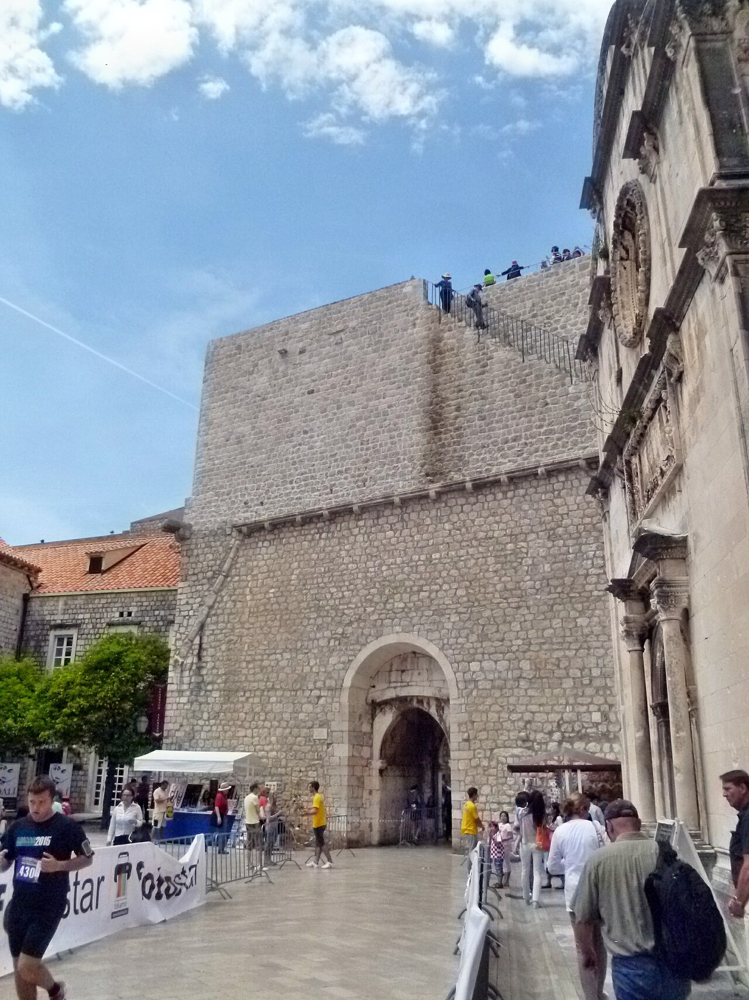

CityLoop Quest Dubrovnik


Les grands noms de Dubrovnik ont rarement été des conquérants. La République valorisait davantage le diplomate capable d’éviter une guerre, le savant qui améliorait la réputation de la cité ou l’écrivain qui révélait ses contradictions. Même saint Blaise, protecteur légendaire, est honoré pour avoir averti les habitants d’un danger plutôt que pour avoir mené une armée.
Marin Držić, né en 1508, transforma les tensions sociales en théâtre. Organiste, prêtre, étudiant à Sienne et homme de scène, il peupla ses comédies d’avaricieux, de domestiques intelligents, de jeunes amoureux et de voyageurs dupés. Dundo Maroje fait résonner les accents d’une ville commerçante où chacun joue un rôle. En 1566, Držić écrivit à Cosme Ier de Médicis pour proposer un renversement de l’oligarchie ragusaine : geste risqué qui révèle combien son humour pouvait devenir politique.

Ivan Gundulić, né en 1589, incarne le baroque littéraire. Son épopée Osman mêle histoire européenne, imaginaire chrétien et méditation sur l’instabilité du pouvoir. Dans la pastorale Dubravka, l’hymne à la liberté est devenu l’une des expressions les plus célèbres de l’identité de Dubrovnik. Sa statue, inaugurée en 1893, domine le marché matinal comme si la poésie devait rester mêlée au bruit des cageots et des négociations.

Le scientifique Ruđer Bošković, né en 1711, quitta tôt Dubrovnik mais conserva des liens étroits avec sa patrie. Jésuite, mathématicien, astronome et diplomate, il élabora une théorie originale de la matière fondée sur des forces attractives et répulsives. Il conseilla des États, dirigea des travaux d’optique et défendit les intérêts de Raguse à l’étranger. Marin Getaldić, un siècle plus tôt, avait déjà mené des expériences sur les miroirs paraboliques dans la grotte de Betina et publié des ouvrages mathématiques reconnus en Europe.
Les femmes apparaissent moins souvent dans les archives publiques, car les institutions politiques leur étaient fermées. Cvijeta Zuzorić, née vers 1552, devint pourtant une figure majeure des cercles littéraires. Poètes et artistes célébrèrent son intelligence autant que sa beauté ; sa maison fut associée aux échanges humanistes. Les religieuses, veuves de marchands et gestionnaires de domaines jouèrent également des rôles économiques souvent discrets mais essentiels.
Miho Pracat offre un autre parcours singulier. Né sur l’île de Lopud en 1522, cet armateur enrichi légua une grande partie de sa fortune à des œuvres publiques. Son buste dans le palais du Recteur constitue un honneur exceptionnel accordé à un citoyen non noble. Držić, Gundulić, Bošković, Getaldić, Zuzorić et Pracat montrent différentes voies vers la mémoire : le rire, la poésie, la science, la sociabilité et le service collectif.